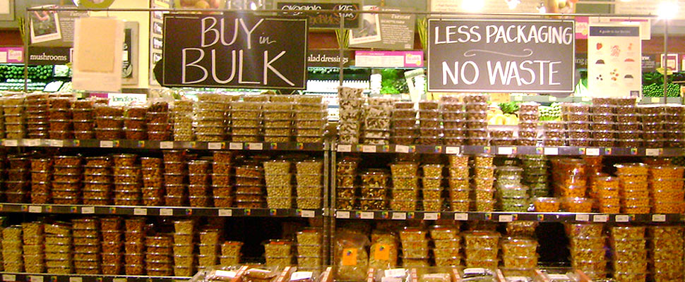
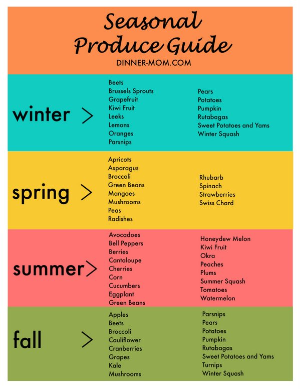
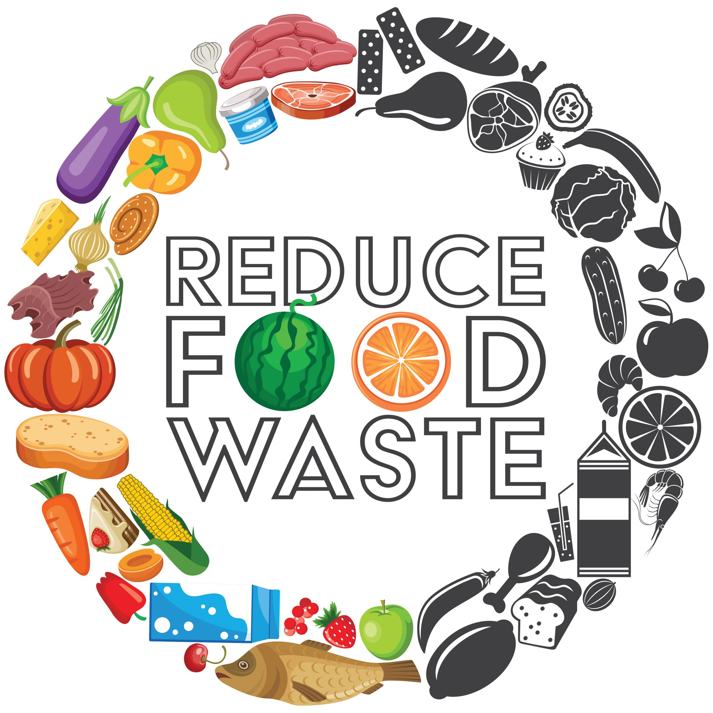
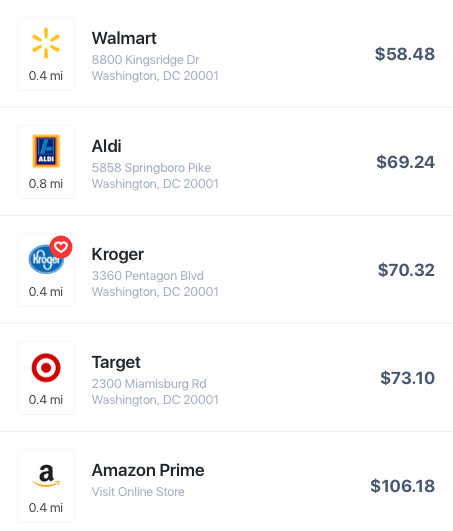
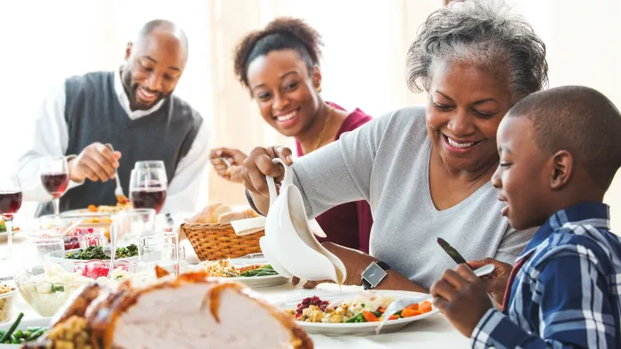

Savvy Strategies for Eating Healthy on a Budget
By: Paris Scott
Published on 12/03/2023
Introduction:
Maintaining a nutritious diet doesn't have to break the bank. By adopting a few simple yet effective strategies, you can embrace healthy eating while staying within your budget. Let's explore some creative and friendly tips to help you nourish your body without draining your wallet.
1. Plan Your Meals:

One of the most crucial steps in eating healthy on a budget is meal planning. Take some time each week to plan your meals, considering your nutritional needs and the ingredients you already have. By creating a detailed shopping list, you'll avoid impulse purchases and wastage, ultimately saving money.
2. Embrace Whole Foods:

Whole foods, such as fruits, vegetables, whole grains, and legumes, are not only nutritious but also budget-friendly. These foods provide essential vitamins, minerals, and fiber, while being more affordable compared to processed alternatives. Incorporate these wholesome options into your meals to ensure a balanced and cost-effective diet.
3. Buy in Bulk:

Buying in bulk can be a game-changer when it comes to eating healthy on a budget. Seek out bulk sections in grocery stores or consider joining a local co-op or wholesale club. Stock up on staples like rice, dried beans, oats, and nuts, as they have a long shelf life and offer excellent nutritional value for the price.
4. Cook at Home:
Eating out or relying on pre-packaged meals can quickly drain your budget. Instead, try cooking at home. Not only will you save money, but you'll also have full control over the ingredients used in your meals. Experiment with simple and delicious recipes that incorporate affordable ingredients, and consider batch cooking to save time.
5. Emphasize Seasonal and Local Produce:

Seasonal fruits and vegetables are often more affordable and fresher than their out-of-season counterparts. Additionally, buying from local farmers' markets or joining a community-supported agriculture (CSA) program can provide you with fresh produce at reasonable prices. Supporting local farmers also helps build a sustainable food system.
6. Minimize Food Waste:

Reducing food waste is not only environmentally friendly but also budget-friendly. Plan your meals to use up leftovers and repurpose ingredients creatively. For example, vegetable scraps can be used to make flavorful homemade vegetable broth, and overripe fruits can be turned into smoothies or baked goods.
7. Compare Prices and Look for Sales:

Before you shop, compare prices at different stores or online platforms to find the best deals. Keep an eye out for discounts, sales, or coupons on healthy food items. Joining loyalty programs or signing up for newsletters from grocery stores can also help you stay informed about special offers and promotions.
8. Grow Your Own:
If you have space and time, consider starting a small garden. Growing your own herbs, fruits, or vegetables not only ensures freshness but also saves money in the long run. Even if you don't have a garden, you can try growing herbs in small pots on your windowsill or balcony.
Conclusion:

Eating healthy on a budget is entirely possible with a little planning, creativity, and smart shopping. By adopting these strategies, you can enjoy a well-balanced diet while keeping your wallet happy. Remember, a friendly and helpful approach to healthy eating will contribute to your overall well-being, both physically and financially.